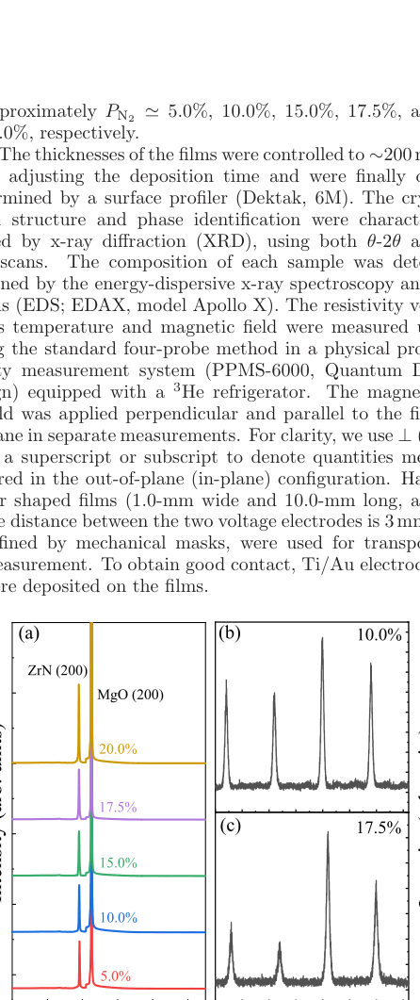
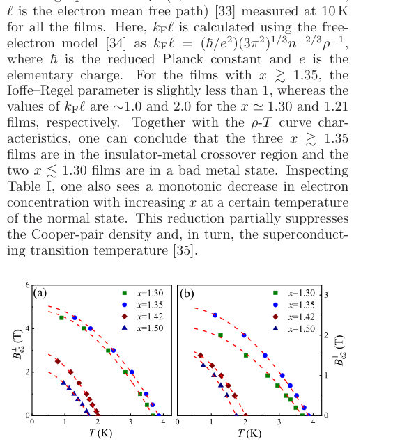
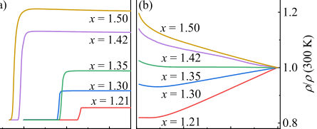

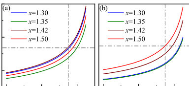
Authors: Mykhaylo Balinskiy, Paulo Julio, Jeffrey Vargas, Diana Bisono Balaguer, Jacob Greenstein, Alexander Khitun
Type: both · Category: other · PDF: https://arxiv.org/pdf/2608.28457v1
Analysis basis: full PDF text, analyzed in chunks
Topic relevance: driven-dissipative phase transition 3/5 · methods for driven-dissipative 2/5 · non-equilibrium universality 2/5 · Keldysh / 2PI / non-Gaussian methods 1/5 · analog quantum simulation 1/5 · correlated / nonlocal dissipation 1/5
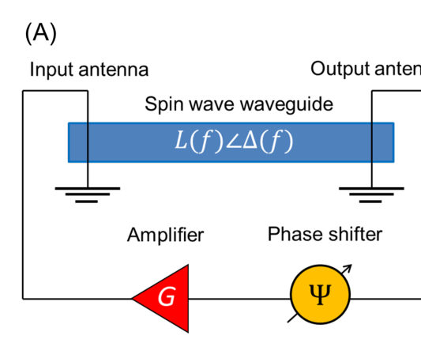
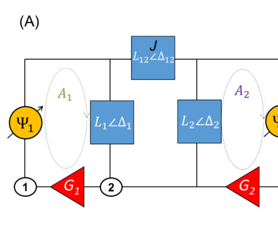
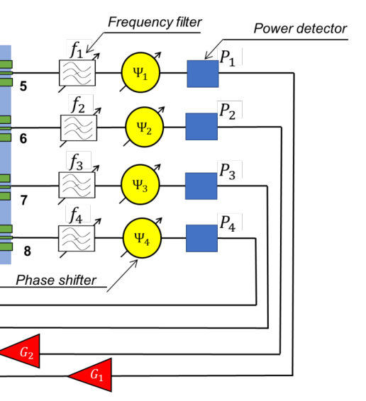
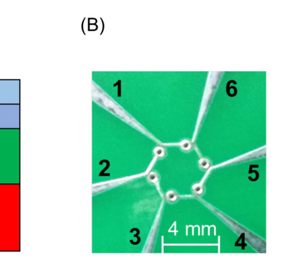
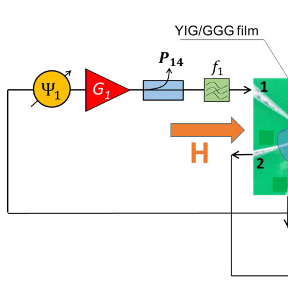
Summary. This paper proposes a Magnonic Combinatorial Memory (MCM) that stores data by controlling the auto-oscillation state within a network of coupled active ring circuits. The system demonstrates a quadratic scaling of storage capacity with the number of coupled units, achieving high contrast ratios in experiments. It represents a solid-state approach to high-density, non-volatile memory using magnonics.
Why it may be interesting. The use of coupled, non-linear, dissipative systems (ARCs) to store classical information via collective oscillation states provides a rich platform for studying non-equilibrium dynamics and complex state spaces, relevant to open quantum systems.
Main problem. The paper addresses the development of a novel, high-density memory device, the Magnonic Combinatorial Memory (MCM), whose information storage capacity scales quadratically with the number of coupled circuits.
Main result. Experimental demonstrations using three coupled active ring circuits achieved a 27-bit binary response pattern with a robust On/Off ratio exceeding 30 dB at room temperature.
Method. The research combines theoretical modeling of coupled oscillator dynamics (using transfer matrices and spectral radius) with experimental characterization of magnonic circuits.
Model / system. The system is based on a network of coupled Active Ring Circuits (ARCs) utilizing spin waves propagating in a Yttrium Iron Garnet (YIG) film. Information is encoded in the auto-oscillation state (presence/absence) determined by the phase and frequency settings of the coupled circuits.
Key observables. Auto-oscillation power (On/Off ratio), spectral radius ($ ho(T)$), and the number of accessible phase combinations (bits).
Important parameters / regimes. Quadratic scaling of bits with the number of circuits ($O(N^2)$); On/Off ratio > 30 dB; Room temperature operation.
Assumptions / limitations. The coupling mechanism is assumed reciprocal, and the analysis often relies on linearizing the dynamics or assuming independent control over coupling coefficients.
Figures summary. Figures illustrate schematics of single and coupled ARCs, phase maps showing oscillation regions, and experimental data correlating phase settings with measured circulating power.
Paper structure. The paper progresses from defining the MCM concept and its components (ARCs, coupling) to theoretical modeling of coupled dynamics, presenting experimental validation using multiple coupled circuits, and concluding with a discussion of scalability and limitations.
Magnonic Combinatorial Memory (MCM) is a type of memory where the bits of information are encoded in the signal propagation paths in the network. In this work, we consider MCM based on the network of a coupled active ring circuit (ARC). Each circuit includes a broadband amplifier, a magnonic delay line, an adjustable frequency filter, an adjustable phase shifter, and a power detector. The coupling between the circuits is via spin waves propagating in the common delay line - ferrite film. There may or may not be auto-oscillations in the active ring circuits, depending on the combination of circuit parameters and circuit coupling. The address of MCM is defined as the combination of the states of the phase shifters and frequency filters, while the MCM state is defined as the presence/absence of the auto-oscillations. The coupling between the circuits is achieved by placing micromagnets on top of the ferrite film. The number of bits that can be encoded in the network increases quadratically with the number of coupled circuits. This scaling provides a fundamental advantage over conventional memory. We present experimental data obtained for three magnonic ARCs connected via a single-crystal yttrium iron garnet Y3Fe2(FeO4)3 (YIG) film. The data illustrate an example of encoding a 27-bit binary response pattern, corresponding to the 27 experimentally accessible phase combinations. The results demonstrate a robust operation of MCM with an On/Off ratio exceeding 30 dB at room temperature. The advantages and shortcomings of the proposed approach are discussed.
Authors: R. Johanna Zijderveld, Hélène Spring, Anton R. Akhmerov
Type: theory · Category: disordered systems and neural networks · PDF: https://arxiv.org/pdf/2608.28479v1
Analysis basis: full PDF text, analyzed in chunks
Topic relevance: methods for driven-dissipative 3/5 · Keldysh / 2PI / non-Gaussian methods 1/5 · analog quantum simulation 1/5 · driven-dissipative phase transition 1/5 · non-equilibrium universality 1/5
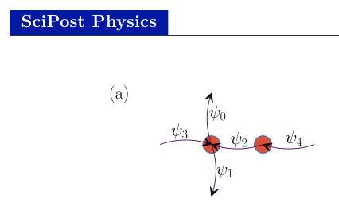
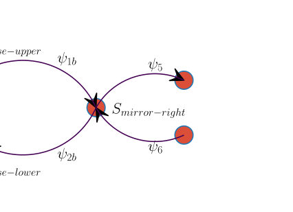
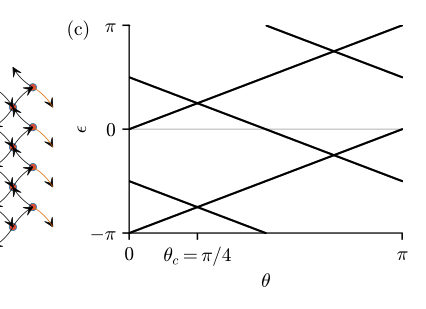
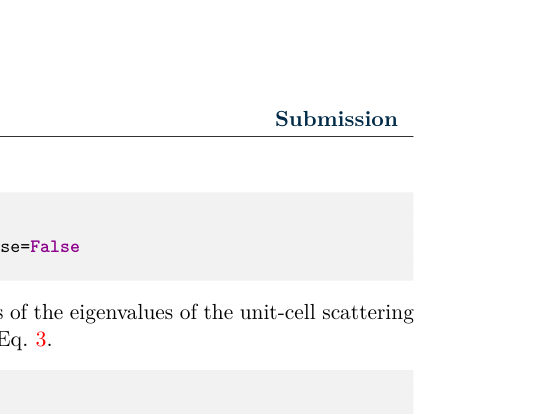
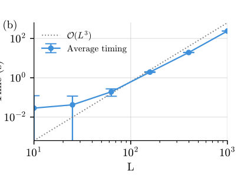
Summary. This paper introduces ScatterWorks, an open-source Python package designed to model and solve quantum transport problems in complex network geometries. It allows researchers to build systems using modular operations and calculate key observables like conductance and quasienergies. This tool is particularly valuable for studying disordered and topological systems where analytical solutions are intractable.
Why it may be interesting. The package provides a powerful, general-purpose tool for calculating transport properties in complex quantum structures, which is highly relevant for studying open quantum systems and mesoscopic physics.
Main problem. The paper addresses the need for a flexible and unified computational framework to study non-interacting transport and wave-propagation phenomena in complex, disordered, and topological quantum systems.
Main result. The authors introduce ScatterWorks, a Python package that successfully models and solves transport problems for systems like the Chalker-Coddington model, recovering expected critical behavior.
Method. The package builds networks using composable transformations (tile, cut, union) and assembles local scattering matrices into a global scattering operator, which is then solved using Schur-based linear algebra techniques.
Model / system. The models studied are general scattering networks, applicable to disordered systems, topological insulators, and moiré lattices. Examples include the Fabry-Perot interferometer and the Chalker-Coddington model describing the quantum Hall transition.
Key observables. Quasienergies, conductance (G), effective scattering matrix (S_eff), transmission (t), and reflection (r) coefficients.
Important parameters / regimes. The critical point parameter ($ heta_c = \pi/4$) for the quantum Hall transition, and the system size ($L$) governing computational scaling.
Assumptions / limitations. The derivation of the effective scattering matrix assumes that the internal scattering block ($\mathbf{S}_{ ext{bb}}$) does not have an eigenvalue of one, preventing singularity.
Figures summary. Figures illustrate the structure of the global scattering matrix, the basic setup of a Fabry-Perot interferometer, and the tiled structure of the Chalker-Coddington network, showing conductance vs. disorder parameter.
Paper structure. The paper details a systematic workflow: defining the base network, modifying it using operations (tile, cut, union, relink), compiling the global scattering operator, and finally solving for transport observables using Schur complements.
Network models provide an efficient framework for studying non-interacting transport and wave-propagation phenomena in disordered and topological systems. We introduce ScatterWorks, an open-source Python package for building and solving network models. The package uses a compact network representation with composable transformation operations (tile, cut, relink, and union) to enable flexible construction of periodic and finite networks. Local scattering matrices on nodes can be assigned by node labels or explicit indexing, assembled into global scattering equations, and used to compute quasienergies and transport observables. The package supports sparse scattering matrices, allowing transport observables to be evaluated with Schur-based solvers. We demonstrate the package workflow on a symbolic Fabry-Perot interferometer and a numerical Chalker-Coddington model, recovering analytical expressions and the expected near-critical transport behavior of the quantum Hall transition. Plotting utilities with label-aware rendering are included to streamline debugging and reproducible setup for larger, custom network geometries.
Authors: Bo Zou, A. Okounkova, Shuaiqing Zhang, Jian Liao, J. Pack, K. Watanabe, T. Taniguchi, Yihang Zeng
Type: both · Category: strongly correlated electrons · PDF: https://arxiv.org/pdf/2608.28381v1
Analysis basis: full PDF text, analyzed in chunks
Topic relevance: analog quantum simulation 3/5 · Keldysh / 2PI / non-Gaussian methods 1/5 · quantum measurements 1/5
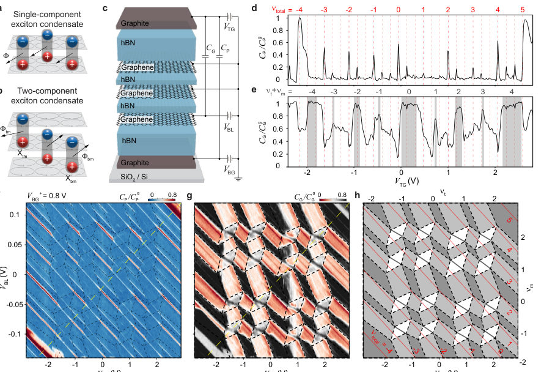
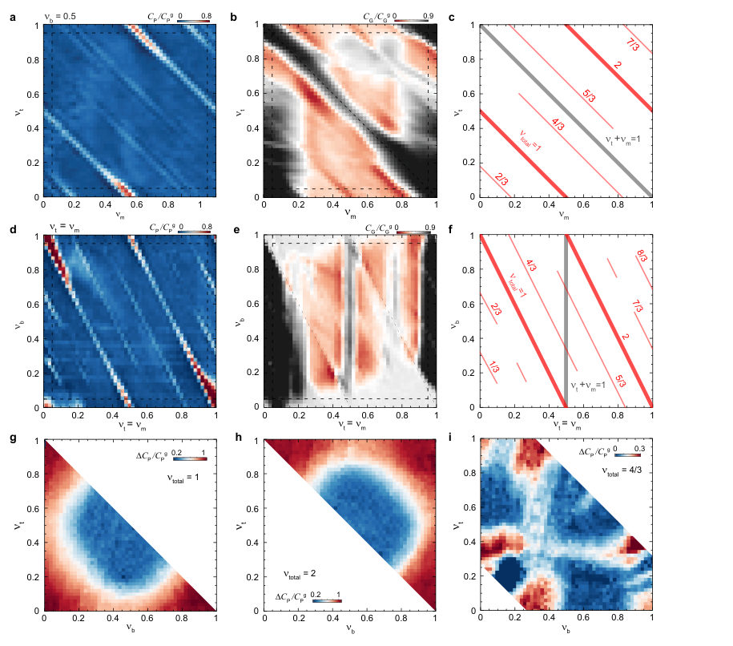
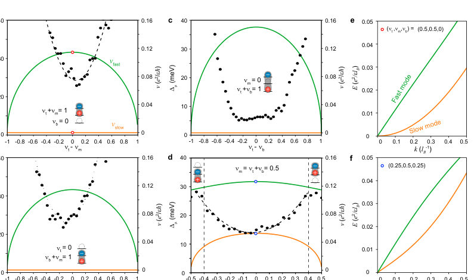
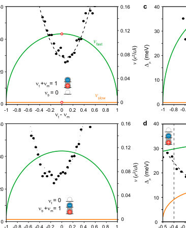
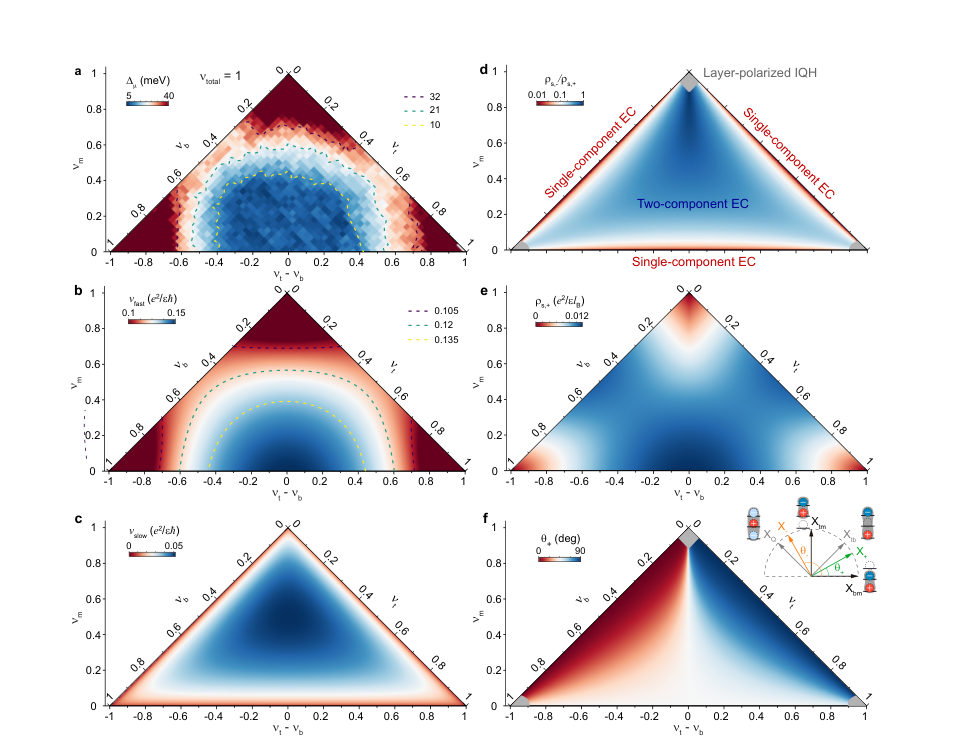
Summary. This work reports on the realization of an electrically tunable two-component exciton condensate in a graphene trilayer. By combining quantum capacitance measurements with advanced mean-field theory, the authors demonstrate that the condensate's internal structure can be continuously controlled by electrostatic gating. This provides strong evidence for a highly controllable, correlated excitonic phase in solid-state matter.
Why it may be interesting. The ability to electrically tune the internal structure of a correlated quantum state (the exciton condensate) provides a clean platform to study the interplay between external control parameters and emergent many-body symmetries, relevant to understanding correlated phases in artificial lattices.
Main problem. To realize and study the continuously tunable internal structure of a two-component exciton condensate in a solid-state system, moving beyond systems where component properties are fixed by material chemistry.
Main result. The experiment confirms the existence of a two-component exciton condensate with a continuously tunable internal structure, supported by the observation of persistent quantum Hall states and the continuous rotation of condensate mode composition.
Method. The study combines quantum-capacitance measurements (experimental) with Hartree-Fock and Time-Dependent Hartree-Fock calculations (theoretical) to analyze collective excitations.
Model / system. The system is a graphene trilayer with negligible interlayer tunneling, supporting excitons bound by Coulomb interaction. The condensate is modeled as having two independent relative U(1) symmetries.
Key observables. Quantum capacitance ($C_P, C_G$), charge-incompressible quantum Hall states ($ u_{ ext{total}}=1, 2$), phase-stiffness eigenmodes, and Goldstone mode dispersions.
Important parameters / regimes. Layer-specific carrier densities ($ u_t, u_m, u_b$), total filling factors ($ u_{ ext{total}}$), and applied electrostatic gating voltages.
Assumptions / limitations. The analysis assumes negligible single-particle tunneling between layers and relies on mean-field approximations (Hartree-Fock).
Figures summary. Figures illustrate schematics of single- and two-component condensates, quantum capacitance measurements showing QHS states, and 3D scans mapping incompressibility across the layer-filling space.
Paper structure. The paper establishes the physical platform and experimental control, uses quantum capacitance to map out incompressible states, and then employs theoretical calculations (HF/TDHF) to characterize the resulting two-component condensate modes and their continuous tunability.
Multicomponent condensates possess internal phase degrees of freedom unavailable to a single-component condensate, yet their components are rarely controllable in solids. Here we realize a graphene trilayer with negligible interlayer tunnelling in which the layer-specific carrier densities are continuously tuned by electrostatic gating. Quantum-capacitance measurements demonstrate that charge-incompressible quantum Hall states at total filling factors 1 and 2 persist across the full range of layer-filling configurations and continuously connect the three bilayer exciton-condensate limits. This persistence provides evidence for a trilayer excitonic state. Static Hartree-Fock and time-dependent Hartree-Fock calculations yield two independent finite phase-stiffness eigenmodes and two linearly dispersing Goldstone modes, respectively, when all three layers are partially filled, whereas only one phase-stiffness eigenmode and one linear Goldstone mode remain when one layer is unfilled. The stiffness eigenmodes rotate continuously between the two adjacent-layer exciton bases as charge is transferred among the layers, revealing electrical control of the condensate-mode composition. Together, the experimental and theoretical results support the identification of a two-component exciton condensate with a continuously tunable internal structure.
Authors: Zi-Yan Han, Li-Min Yu, Yu-Cheng Cong, Yang Yang, Zhi-Xiang Sun, Zhi-Qing Li
Type: experiment · Category: disordered systems and neural networks · PDF: https://arxiv.org/pdf/2608.28166v1
Analysis basis: full PDF text, analyzed in chunks
Topic relevance: non-equilibrium universality 3/5




Summary. This work experimentally demonstrates the presence of a 2D quantum Griffiths singularity in bulk 3D superconducting films ($ ext{ZrN}_x$). By analyzing magnetoresistance scaling, the authors show that the transport properties near the quantum phase transition are dominated by 2D-like rare regions formed by intrinsic defects. This highlights that disorder-induced inhomogeneity can dictate the critical scaling behavior, even in ostensibly higher-dimensional superconductors.
Why it may be interesting. The discrepancy between the macroscopic 3D nature and the observed 2D critical scaling provides a concrete experimental realization of how disorder can induce lower-dimensional critical behavior in a higher-dimensional material, which is relevant to understanding quantum critical points in disordered quantum systems.
Main problem. The study reports the experimental observation of a two-dimensional (2D) quantum Griffiths singularity (QGS) in superconducting films that are macroscopically three-dimensional (3D).
Main result. Despite the 3D superconducting nature, the magnetoresistance isotherms exhibit power-law scaling characteristic of 2D systems, indicating that disorder-induced rare regions govern the critical behavior near the quantum phase transition.
Method. The research utilized low-temperature electrical transport measurements, specifically analyzing magnetoresistance isotherms ($ ho$ vs. $B$) and resistivity scaling near the superconductor-insulator transition.
Model / system. The physical system is epitaxial $ ext{ZrN}_x$ superconducting films ($\sim 200$-nm-thick) with a rock-salt structure. The underlying physics is governed by quenched disorder from intrinsic defects (vacancies, interstitials) creating spatially inhomogeneous superconducting rare regions.
Key observables. Magnetoresistance isotherms, effective critical exponent $z u$, and resistivity data near the superconductor-insulator transition.
Important parameters / regimes. Nitrogen concentration ($x \gtrsim 1.30$), magnetic field ($B$), and temperature ($T$).
Assumptions / limitations. The analysis assumes that the dynamics of the superconducting rare regions effectively behave as 2D systems near the quantum critical point, despite the bulk material being 3D.
Figures summary. Figures show XRD patterns confirming the rock-salt structure, and resistivity vs. temperature/field measurements used to extract scaling exponents.
Paper structure. The paper presents experimental characterization (XRD, EDS), followed by transport measurements ($ ho(T, B)$), analysis of superconducting coherence lengths, and finally, the core argument comparing the observed 2D scaling behavior against the expected 3D behavior near the QPT.
We report the experimental observation of two-dimensional (2D) quantum Griffiths singularity (QGS) in $\sim$200-nm-thick epitaxial ZrN$_x$ superconducting films. The films possess a rock-salt structure and are three-dimensional (3D) with respect to superconductivity. For each film with $x \gtrsim 1.30$, the low-temperature magnetoresistance isotherms under fields perpendicular and parallel to the film plane cross over at a broad magnetic field range independently rather than at a single crossing point. Despite the macroscopic 3D nature of the superconductivity, the magnetoresistance isotherms at selected adjacent temperatures follow the theoretical prediction of power-law scaling for 2D superconducting systems, rather than that for 3D systems. The effective critical exponent $zν$, obtained by analyzing the magnetoresistance isotherms using the 2D power-law scaling, increases with decreasing temperature and diverges as the quantum phase transition is approached. In addition, the resistivity data near the superconductor-insulator or superconductor-metal transitions obey an activated scaling form that describes the quantum phase transition of 2D superconducting systems governed by an infinite-randomness critical point. The QGS in the ZrN$_x$ films is attributed to quenched disorder induced by intrinsic defects, such as Zr vacancies and N interstitials, which creates spatially inhomogeneous superconducting rare regions. The dynamics of these rare regions, which may exhibit effective 2D characteristics near the quantum critical point, dominate the transport properties of the system near the quantum phase transition. Our results provide compelling evidence for the existence of QGS in 3D superconductors and highlight the crucial role of disorder-induced inhomogeneity in determining the critical behavior of quantum phase transitions.
Authors: Henrik Schou Guttesen
Type: theory · Category: other · PDF: https://arxiv.org/pdf/2608.27622v1
Analysis basis: full PDF text, analyzed in chunks
Topic relevance: analog quantum simulation 2/5 · driven-dissipative phase transition 2/5 · interference shaping light 2/5 · methods for driven-dissipative 2/5 · correlated / nonlocal dissipation 1/5 · non-equilibrium universality 1/5
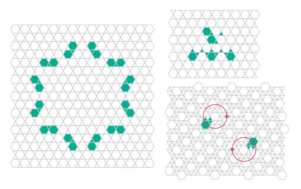
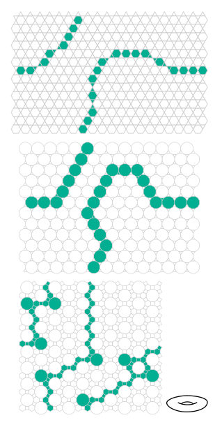
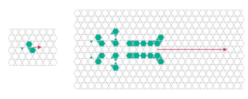
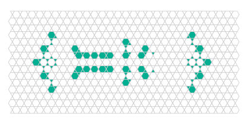
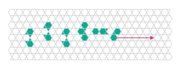
Summary. This work investigates Conway's Game of Life on complex crystal lattices, discovering robust structures like glider guns. Crucially, the authors extend the model by adding a phase degree of freedom, demonstrating that this allows for the creation of phase-periodic gliders. This suggests a pathway for developing phase-sensitive and interference-based computation within cellular automata frameworks.
Why it may be interesting. While not directly about qubits or standard quantum Hamiltonians, the introduction of phase dynamics and the comparison to Quantum Cellular Automata (QCA) makes it relevant for researchers studying non-unitary or extended classical/quantum computational models.
Main problem. The paper explores Conway's Game of Life (GoL) on various Archimedean lattices, extending the model to incorporate phase degrees of freedom to study phase-sensitive computation.
Main result. A novel glider gun was constructed on the Kagome lattice, and the phase extension demonstrated the possibility of phase-periodic gliders, enabling interference-based computation.
Method. The authors used a combination of evolutionary search algorithms, simulation on composite lattices, and mathematical analysis of phase evolution governed by Toeplitz matrices.
Model / system. The core model is GoL applied to six composite Archimedean lattices. It is extended by assigning a phase degree of freedom ($\phi$) to each cell, leading to a multi-component state $c = r \exp(i\phi)$.
Key observables. Glider guns, oscillators (periodicity), puffers, bouncer walls, and phase-periodic gliders.
Important parameters / regimes. The phase interaction parameter $\kappa$ and the lattice structure (e.g., Kagome, Maple leaf).
Assumptions / limitations. The phase update rule is local and depends only on the local phase environment, allowing for a mathematical description via Toeplitz matrix iteration.
Figures summary. Figures illustrate the Moore neighborhood on the Kagome lattice, examples of topological still life, various oscillators, and specific phase-periodic glider examples.
Paper structure. The paper progresses from exploring basic GoL dynamics and finding structures like glider guns on specific lattices, to generalizing the model by adding a phase degree of freedom, and finally analyzing the resulting phase dynamics using Fourier decomposition.
I explore Conway's Game of Life (GoL) on six composite Archimedean lattices. On the Kagome lattice, on which small gliders and puffers appear particularly frequently across inputs, I use the output of a symmetry-constrained evolutionary search algorithm to construct a novel glider gun. The glider gun comprises four interacting bouncers and stably emits a small glider every 276th generation. Serving as an extension of classical GoL, I also propose cells with a phase degree of freedom and an associated local phase rule, which on the Kagome lattice is demonstrated to host phase-periodic gliders. This enables the possibility of phase-sensitive and interference-based computations.
Authors: Mikhail Y. Laktionov, Frans A. M. Leermakers, Ralf P. Richter, Leonid I. Klushin, Oleg V. Borisov
Type: theory · Category: statistical mechanics · PDF: https://arxiv.org/pdf/2608.27995v1
Analysis basis: full PDF text, analyzed in chunks
Topic relevance: Keldysh / 2PI / non-Gaussian methods 2/5 · methods for driven-dissipative 2/5 · analog quantum simulation 1/5 · driven-dissipative phase transition 1/5 · non-equilibrium universality 1/5 · quantum measurements 1/5
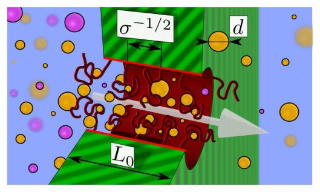

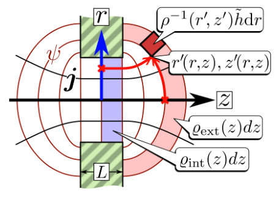
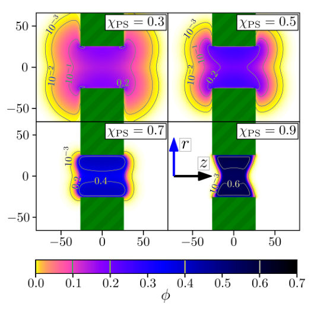
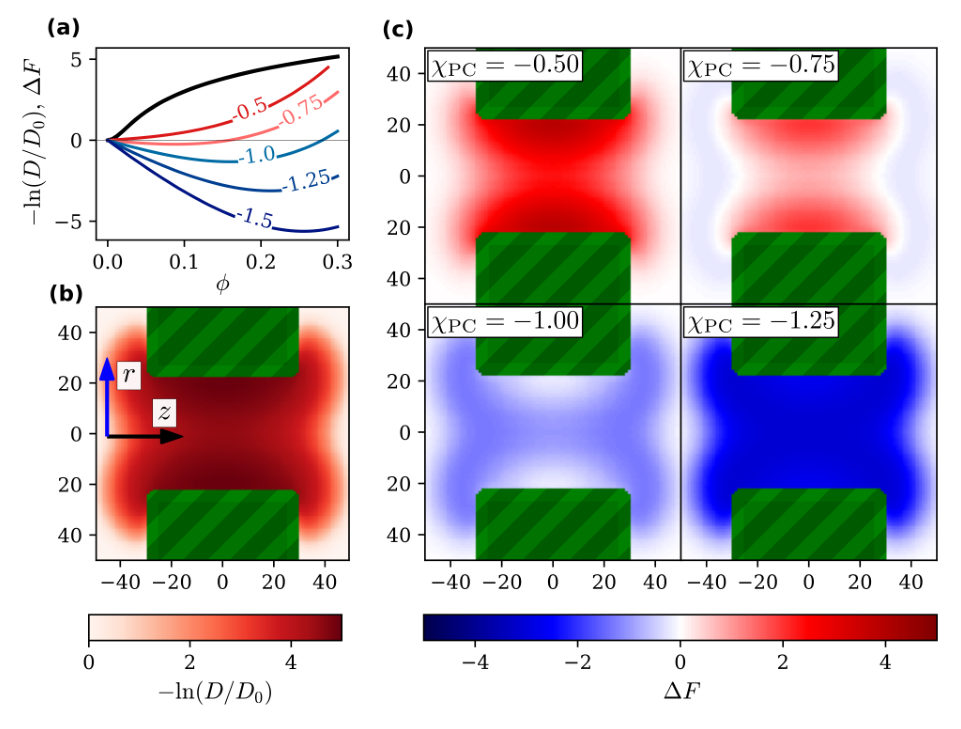
Summary. This work develops a theoretical framework to model how polymer coatings inside mesopores control the passage of colloids. By treating the process as an electrical resistance problem, the authors show that polymer attraction can enhance, rather than just impede, transport. This provides a physical basis for understanding highly selective biological barriers like the Nuclear Pore Complex.
Why it may be interesting. While focused on soft matter transport, the use of resistance/conductivity analogies to model diffusion in complex, confined media touches upon non-equilibrium statistical mechanics and transport phenomena relevant to open quantum systems.
Main problem. The study investigates how polymer filling within mesopores affects the rate and selectivity of colloid permeation, aiming to explain the exquisite permselectivity observed in Nuclear Pore Complexes (NPCs).
Main result. The theoretical framework demonstrates that polymer filling can enhance transport beyond bare pores by maximizing colloid capture, providing a rational design strategy for separation devices.
Method. The authors employ theoretical methods, reformulating the diffusion problem into calculating the total electrical resistance of a medium with position-dependent resistivity.
Model / system. The model uses a cylinder-shaped mesopore filled with a polymer brush, drawing inspiration from the biophysical system of the NPC. Transport is governed by the Smoluchowski equation, treated via electrical analogy.
Key observables. Stationary diffusive flux (j), total pore resistance (R), and the partition coefficient (P) for colloids.
Important parameters / regimes. Polymer grafting density ($\sigma$), degree of polymerization ($N$), Flory-Huggins parameter ($\chi$), and colloid diameter ($d$).
Assumptions / limitations. The analysis assumes unidirectional transport driven by concentration differences and uses simplified models for the pore geometry and colloid shape.
Figures summary. Figures illustrate the schematic of colloid transport through a polymer brush-filled pore and show theoretical predictions mapped against experimental data for NPC translocation.
Paper structure. The paper progresses from defining the physical system (polymer-filled mesopores/NPCs) to establishing the governing mathematical framework (electrical analogy for diffusion) and finally applying this theory to derive quantitative relationships for transport rates and selectivity.
Polymer-functionalised mesopores are an emerging technology for colloid separation, sensing and delivery. Their potential is strikingly illustrated in living cells, where nuclear pore complexes (NPCs) control biocolloid transport between the nucleus and the cytosol. Even colloids much smaller than the biopolymer-filled NPC channel are effectively blocked, but some larger colloids with distinct surface features rapidly permeate. Simplistically, one may expect any polymer filling to obstruct and slow down colloid transport. We demonstrate how a polymer filling that attracts colloids and extends beyond the mesopore, thus maximizing colloid capture, can instead increase permeation compared to a bare pore. We also define how polymer-filled mesopores can effectively gate colloids according to their size and surface features. Our findings provide a basic physical explanation for the exquisite permselectivity of NPCs, and a rational design strategy for novel mesopore-based separation, sensing, catalysis and drug delivery devices with enhanced performance features.
Authors: Eva Greene, Shaohui Qiu
Type: theory · Category: statistical mechanics · PDF: https://arxiv.org/pdf/2608.27645v1
Analysis basis: full PDF text, analyzed in chunks
Topic relevance: driven-dissipative phase transition 2/5 · non-equilibrium universality 2/5 · Keldysh / 2PI / non-Gaussian methods 1/5 · analog quantum simulation 1/5 · methods for driven-dissipative 1/5
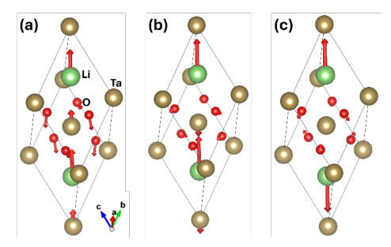
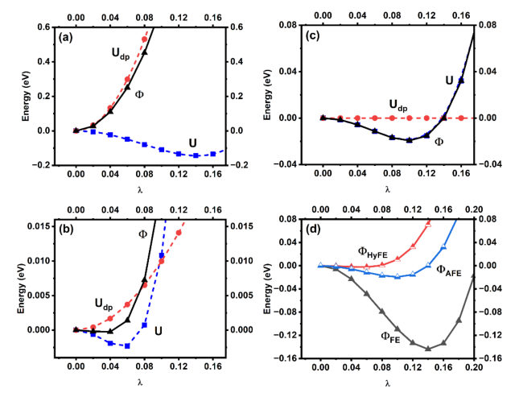
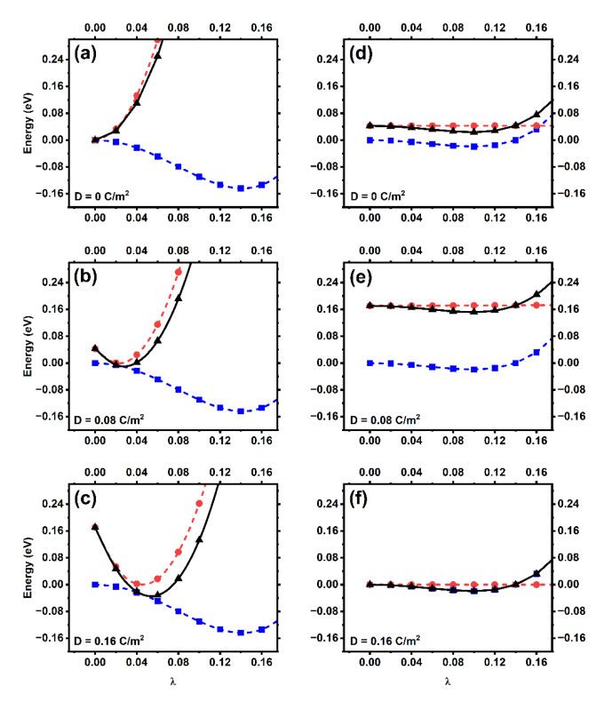
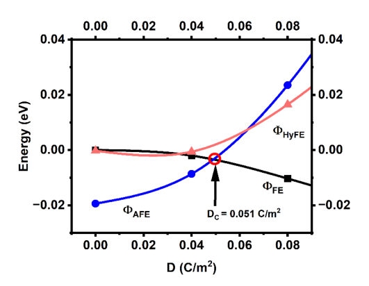
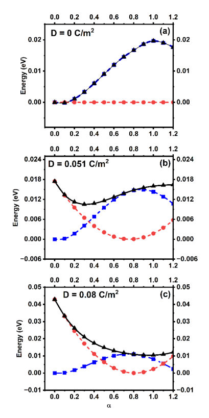
Summary. This theoretical study uses DFT to map the phase competition between ferroelectric and antiferroelectric states in LiTaO3. By analyzing the free energy under varying electric boundary conditions, the authors pinpoint a second-order phase transition at a specific critical electric displacement. This work is significant because it predicts an experimentally accessible pathway for switching between these two technologically relevant phases.
Why it may be interesting. While focused on condensed matter ferroelectrics, the methodology of mapping phase stability via free energy minimization under external fields (D) is a general technique applicable to understanding phase transitions in complex quantum or many-body systems.
Main problem. The study investigates how competing ferroelectric (FE) and antiferroelectric (AFE) phases in LiTaO3 are selected by external electric boundary conditions.
Main result. The system undergoes a second-order FE-AFE phase transition at a critical electric displacement D_c = 0.051 C/m^2, which is more accessible experimentally than in similar materials.
Method. The research employs first-principles Density Functional Theory (DFT) calculations combined with phonon analysis and free-energy mapping techniques.
Model / system. The physical system is Lithium tantalate (LiTaO3), a ferroelectric perovskite oxide. The analysis models the competition between the FE and AFE states by calculating the free energy ($\Phi$) as a function of the electric displacement field (D).
Key observables. Free energy minima depths for FE and AFE phases, the critical electric displacement D_c, and the soft mode frequencies (A_2u and A_2g).
Important parameters / regimes. Boundary conditions (Short-Circuit vs. Open-Circuit), electric displacement D, and the comparison to LiNbO3 parameters.
Assumptions / limitations. The calculations utilize DFT with the local density approximation (LDA) and incorporate the depolarization energy term to account for boundary effects.
Figures summary. Figures illustrate the atomic structure and eigenvectors of the soft modes, and show the free energy ($\Phi$) landscapes for FE and AFE phases under different boundary conditions and as a function of D.
Paper structure. The paper systematically analyzes the stability of the FE and AFE phases under both short-circuit and open-circuit boundary conditions, mapping the free energy landscape versus electric displacement D to locate the second-order transition point.
Ferroelectric and antiferroelectric phases of LiTaO$_3$ compete under different electric boundary conditions. First-principles density-functional calculations show that the high-symmetry reference structure supports two relevant unstable $Γ$ modes: a polar $A_{2u}$ mode at $181i$ cm$^{-1}$ that condenses into the ferroelectric (FE) phase, and an antipolar $A_{2g}$ mode at $103i$ cm$^{-1}$ that condenses into the antiferroelectric (AFE) phase. Under short-circuit conditions the FE phase is the global minimum, with a well depth of $\approx 144$ meV. Under open-circuit conditions the FE phase is destabilized by the unscreened depolarization field and the AFE phase becomes the ground state, with a well depth of $\approx 19$ meV. A weakly unstable longitudinal-optic mode at $48.3i$ cm$^{-1}$ yields a well of only $\approx 0.24$ meV and is thermodynamically irrelevant. Mapping the free energy versus electric displacement $D$ locates a second-order FE$\leftrightarrow$AFE transition at $D_c=0.051$ C/m$^2$, lower than the corresponding $0.07$ C/m$^2$ in LiNbO$_3$ and therefore more accessible experimentally.
Authors: Andreas Hadjipaschalis, Jennifer Cano
Type: theory · Category: other · PDF: https://arxiv.org/pdf/2608.27552v1
Analysis basis: full PDF text, analyzed in chunks
Topic relevance: analog quantum simulation 2/5
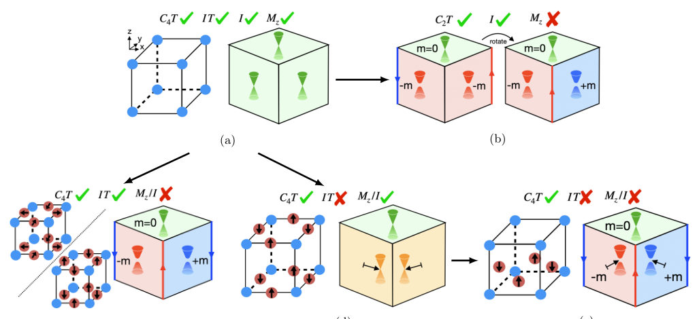
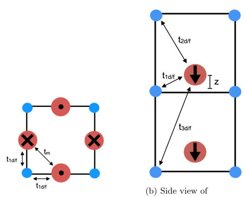
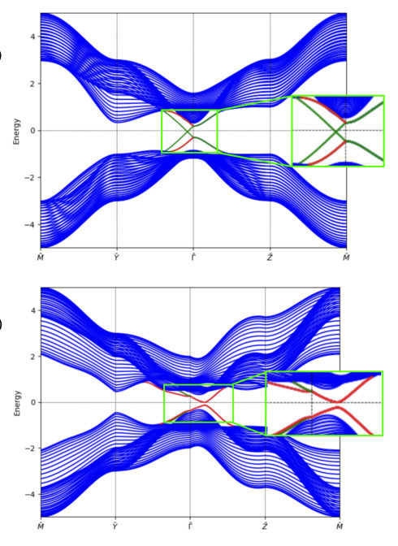
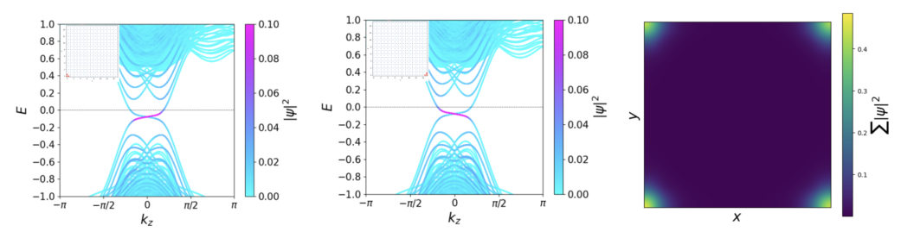
Summary. This paper proposes that collinear altermagnetism offers a novel pathway to realize chiral Higher-Order Topological Insulators (HOTIs). By constructing a model combining a 3DTI with an altermagnetic order, the authors demonstrate that the resulting symmetry breaking successfully generates the characteristic gapless chiral hinge states. This establishes altermagnetism as a key mechanism for engineering advanced topological electronic materials.
Why it may be interesting. While focused on condensed matter topology, the use of symmetry-protected phases and the explicit construction of novel magnetic orders (altermagnetism) provides a rich theoretical framework applicable to understanding symmetry-driven quantum phenomena in engineered materials.
Main problem. The primary goal is to find a physical mechanism to realize the elusive chiral $C_4T$-protected Higher-Order Topological Insulator (HOTI) in electronic materials.
Main result. The authors show that incorporating collinear altermagnetism into a 3D topological insulator model successfully generates the required symmetry breaking and gapless chiral hinge channels.
Method. The research employs analytical and numerical calculations, deriving an effective Hamiltonian by coupling a 3DTI to a collinear $d$-wave altermagnet on a Lieb lattice.
Model / system. The system combines a 3D Topological Insulator (3DTI) with magnetic atoms exhibiting collinear antiferromagnetic order (altermagnetism). The model is built upon a microscopic Hamiltonian that is analyzed via perturbation theory.
Key observables. Chiral hinge channels, gapped surface Dirac cones, and the symmetry protection ($C_4T$) of the topological state.
Important parameters / regimes. The breaking of mirror symmetry ($M_z$) and inversion symmetry ($I$) are crucial for achieving the desired HOTI state.
Assumptions / limitations. The analysis relies on the assumption of weak coupling between the magnetic and topological subsystems, allowing for the use of perturbation theory to derive an effective Hamiltonian.
Figures summary. Figures illustrate the symmetry requirements for $C_4T$-HOTIs, compare surface state spectra when symmetry is preserved versus when $M_z$ is broken, and show the predicted gapless chiral hinge states in an infinite prism geometry.
Paper structure. The paper progresses from identifying the theoretical challenge (chiral HOTIs) to proposing altermagnetism as the solution, developing a detailed microscopic model, and finally using surface/slab calculations to confirm the predicted topological signatures.
Despite significant progress in the study of higher-order topological insulators (HOTIs), the chiral $C_4\mathcal{T}$-protected HOTI has remained elusive in electronic materials, where $C_4\mathcal{T}$ denotes the product of a four-fold rotation and time-reversal symmetry. We show that altermagnetism, a recently discovered form of collinear magnetism, provides a new route to realize this elusive phase. Specifically, we construct a microscopic model that combines a three-dimensional topological insulator with a collinear $d$-wave altermagnet on a Lieb lattice. Through analytical and numerical calculations, we show that the magnetism shifts and gaps the surface Dirac cones to produce the desired chiral hinge channels. Finally, we identify promising material classes to realise our proposal. Our results establish collinear altermagnetism as a route to intrinsic chiral higher-order topology and open a new path toward the discovery of $C_4\mathcal{T}$-protected HOTIs in real materials.
Authors: Hiroshi Hayasaka
Type: theory · Category: other · PDF: https://arxiv.org/pdf/2608.28485v1
Analysis basis: full PDF text, analyzed in chunks
Topic relevance: Keldysh / 2PI / non-Gaussian methods 2/5
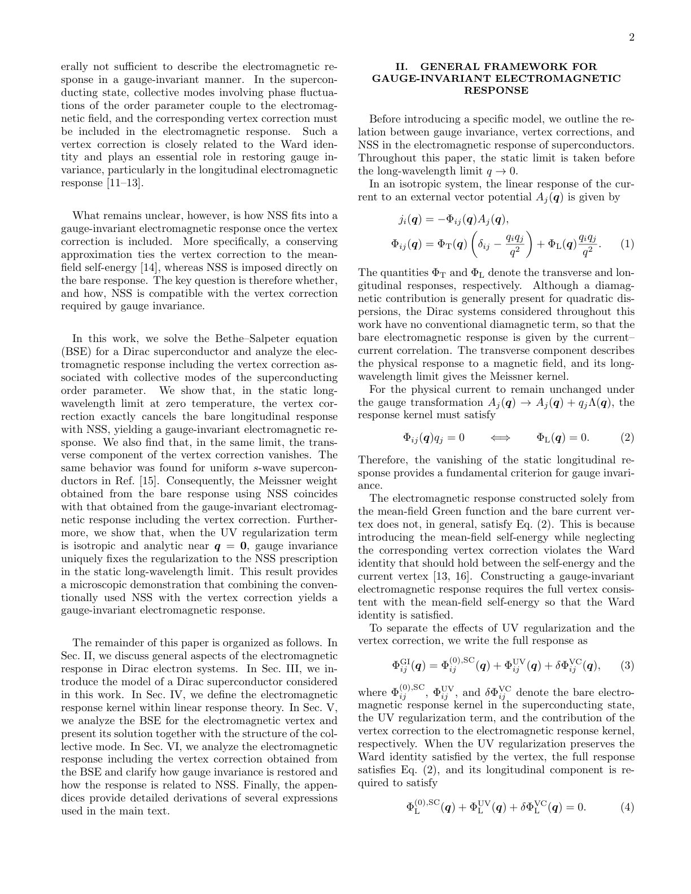
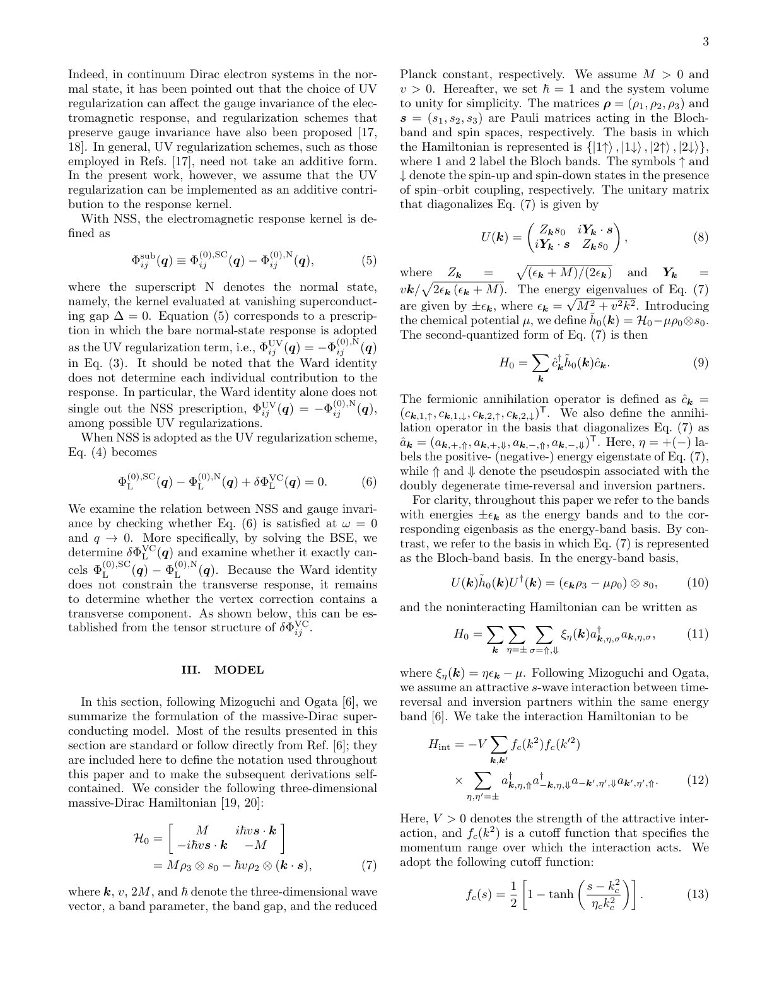
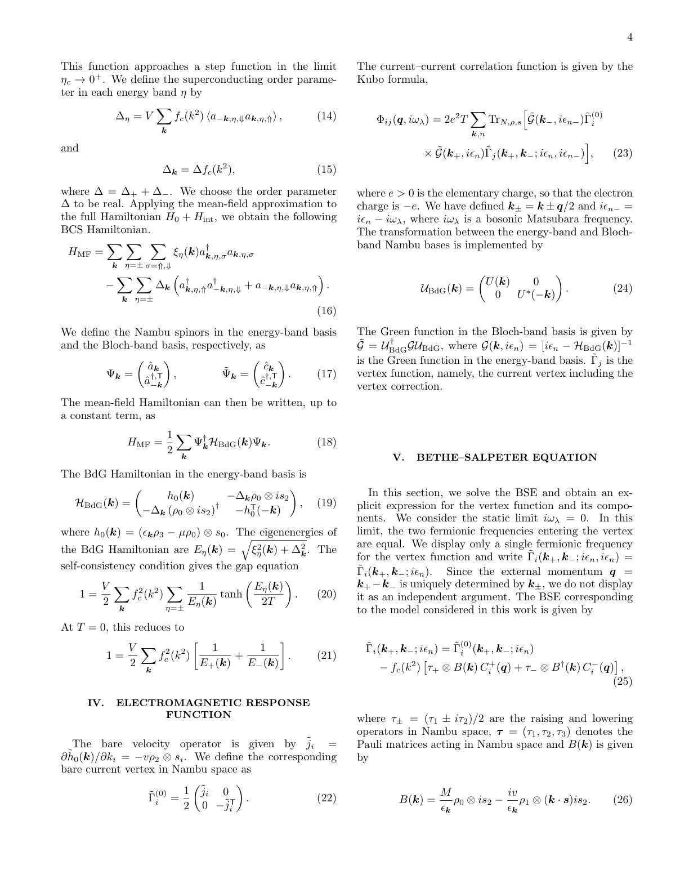
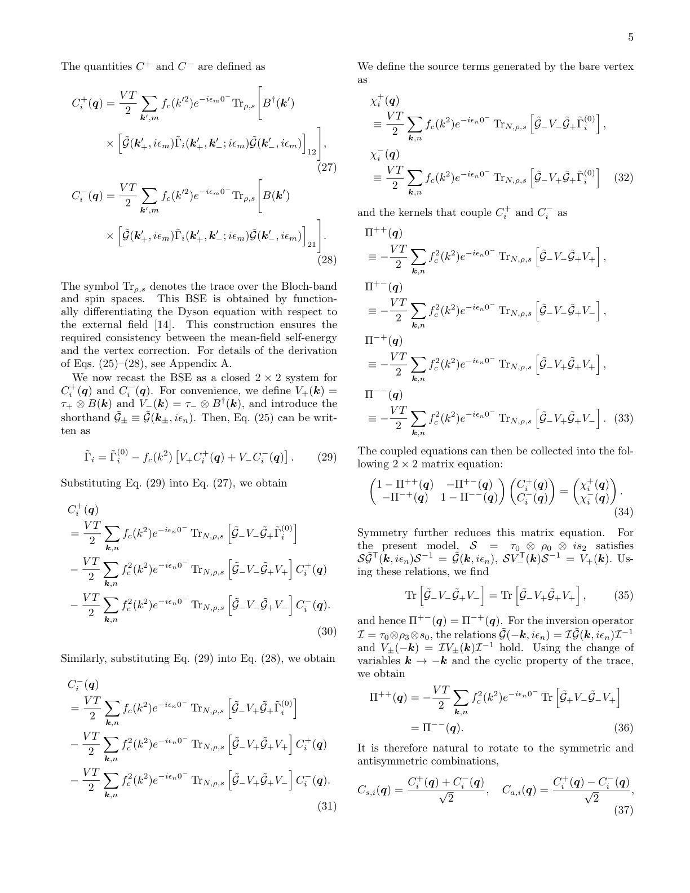
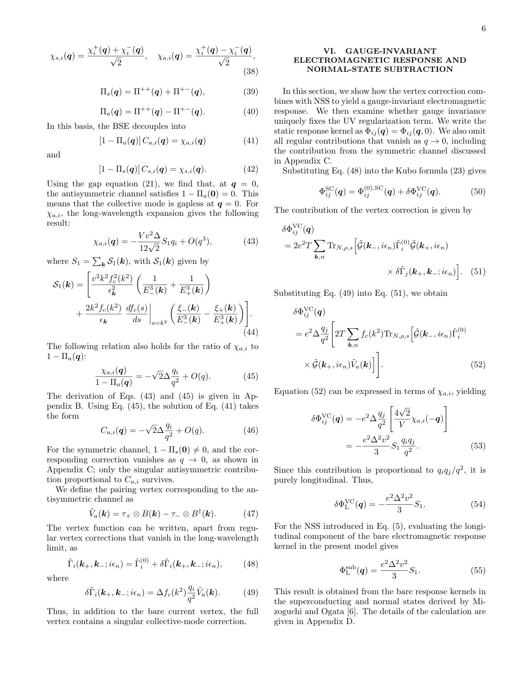
Summary. This theoretical work addresses the ambiguity in calculating the electromagnetic response of Dirac superconductors by investigating the role of vertex corrections. The authors demonstrate that the Normal-State Subtraction (NSS) procedure is rigorously justified because the vertex correction exactly restores gauge invariance in the static limit. This provides a crucial microscopic foundation for a widely used approximation in superconducting theory.
Why it may be interesting. While focused on superconductivity, the rigorous application of gauge invariance constraints via vertex corrections and the justification of a subtraction scheme (NSS) is a fundamental theoretical technique applicable to many interacting quantum systems.
Main problem. The paper aims to microscopically justify the use of Normal-State Subtraction (NSS) when calculating the gauge-invariant electromagnetic response in Dirac superconductors.
Main result. The vertex correction exactly cancels the bare longitudinal response with NSS in the static long-wavelength limit, satisfying the required gauge invariance condition. This confirms that NSS is a valid theoretical procedure for this system.
Method. The authors use linear response theory, solving the Bethe-Salpeter equation, and analyzing the electromagnetic response kernel in the static, long-wavelength limit.
Model / system. The system studied is a Dirac superconductor, modeled using a massive-Dirac Hamiltonian with s-wave pairing. The analysis involves calculating the current-current correlation function via the Kubo formula.
Key observables. Longitudinal ($\Phi_L$) and transverse ($\Phi_T$) components of the electromagnetic response kernel, and the Meissner weight.
Important parameters / regimes. Static long-wavelength limit ($\omega=0, q o 0$), superconducting gap ($\Delta$), and the normal-state response ($\Phi_N$).
Assumptions / limitations. The analysis assumes the UV regularization term can be treated as an additive contribution, and it focuses on the static, long-wavelength limit to enforce gauge invariance.
Figures summary. Not specified in the notes.
Paper structure. The paper develops the full response kernel by decomposing it into bare, UV regularization, and vertex correction terms. It then analyzes the longitudinal and transverse components separately, showing how the vertex correction enforces gauge invariance when NSS is applied.
In Dirac superconductors, the unbounded spectrum of low-energy Dirac models is known to give rise to unphysical interband contributions from deep-lying states to the electromagnetic response. To eliminate these contributions, normal-state subtraction (NSS), in which the normal-state response is subtracted from the superconducting-state response, has been widely employed. However, the relation between NSS and a gauge-invariant electromagnetic response, particularly the role of the vertex correction required by the Ward identity, has remained unclear. In this work, we consider a massive-Dirac model with $s$-wave pairing and analytically investigate the electromagnetic response at zero temperature by solving the Bethe--Salpeter equation and incorporating the collective-mode contribution to the electromagnetic vertex. We show that, in the static long-wavelength limit, the vertex correction exactly cancels the bare longitudinal response with NSS, yielding the vanishing longitudinal response required by gauge invariance. In contrast, the transverse component of the vertex correction vanishes in the long-wavelength limit, so that the gauge-invariant Meissner weight coincides with that obtained from the bare transverse response with NSS. Moreover, within the class of isotropic and analytic UV regularization terms, we show that gauge invariance uniquely fixes the regularization term in the static long-wavelength limit to the value prescribed by NSS. Our results thus provide a microscopic justification for NSS.
Authors: Jaehyeok Lee, Iuegyun Hong, Jinhong Park
Type: theory · Category: other · PDF: https://arxiv.org/pdf/2608.28146v1
Analysis basis: full PDF text, analyzed in chunks
Topic relevance: analog quantum simulation 2/5
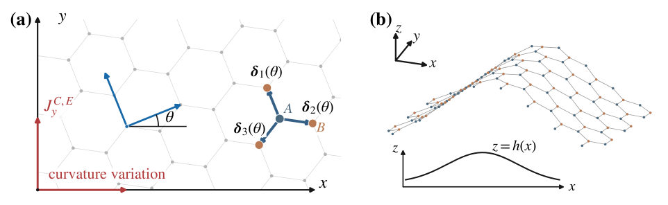
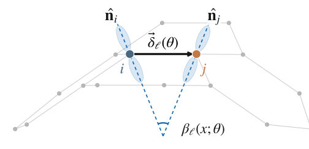
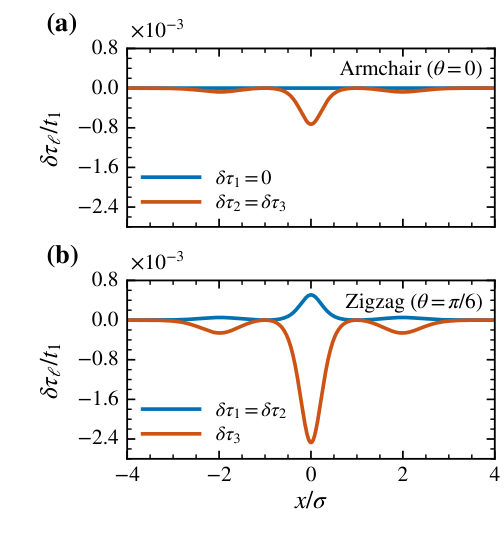
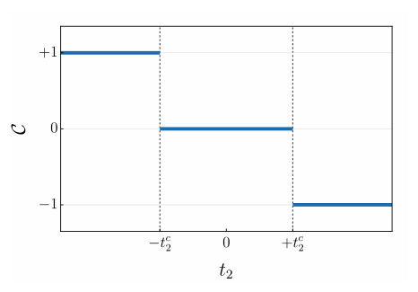
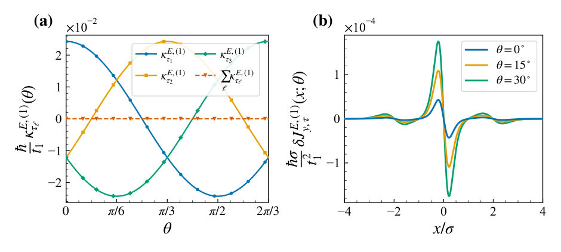
Summary. This theoretical work examines how geometric curvature induces an energy response in the Haldane model, a lattice model for graphene. The authors find that although the low-order energy response is sensitive to microscopic details, the third-order response reveals a universal topological signature matching relativistic predictions. This demonstrates that topological physics can manifest robustly even when the underlying physical response is complex.
Why it may be interesting. The focus on topological invariants emerging from nonrelativistic lattice models under geometric deformations provides a concrete, calculable realization of topological physics beyond standard band theory, which is relevant for understanding emergent phenomena in engineered quantum materials.
Main problem. The paper investigates the topological energy response of a nonrelativistic system (Haldane model) to a smooth, curvature-induced deformation, comparing it to predictions from relativistic field theory.
Main result. While the leading first-order energy response is nonuniversal, the third-order energy response exhibits a universal discontinuity across the topological transition that matches the relativistic Chern-Simons prediction.
Method. The analysis uses a microscopic lattice formulation, employing a systematic spatial-gradient expansion of the energy-current response derived from the continuity equation.
Model / system. The system is modeled using the Haldane model on a graphene sheet subjected to a pure-bending out-of-plane deformation $z=h(x)$. The Hamiltonian incorporates nearest-neighbor and next-nearest-neighbor hopping terms modulated by the curvature.
Key observables. Energy-current response ($\delta J^E_y$), transverse charge current density ($\langle \hat{J}_{C,y} angle$), and the topological Chern number ($C$).
Important parameters / regimes. The third-order gradient expansion coefficient, the topological transition point, and the curvature magnitude ($\kappa$).
Assumptions / limitations. The analysis relies on the pure-bending approximation (neglecting changes in bond lengths) and utilizes a continuum approximation for slowly varying curvature.
Figures summary. Figures illustrate the flat graphene structure, the 3D view under pure bending, and the Slater-Koster model detailing how curvature modulates nearest-neighbor hopping.
Paper structure. The paper systematically calculates the energy response by expanding the energy current in powers of spatial gradients, showing that the leading terms vanish or are nonuniversal, while the third-order term captures the universal topological signature.
Relativistic effective field theory predicts a topological energy response to a gravitational field that appears at third order in spatial gradients. Here, we investigate how this response emerges in the nonrelativistic Haldane model using a microscopic lattice formulation of curvature-induced deformations. We find that the leading first-order energy response is nonuniversal and depends on the bond-resolved structure of the deformation; in particular, it vanishes for a symmetric modulation of the three nearest-neighbor hoppings. In contrast, the third-order response exhibits a discontinuity across the topological transition whose magnitude agrees with the relativistic gravitational Chern--Simons prediction. Thus, although the absolute response is nonuniversal, its third-order discontinuity is universal and retains a characteristic topological fingerprint beyond the relativistic limit.
Authors: Matthias Liepe Michelle M. Kelley, Sean Deyo, Nathan Sitaraman, Danilo B. Liarte, Tomás Arias, James P. Sethna, Thomas Oseroff
Type: theory · Category: other · PDF: https://arxiv.org/pdf/2608.28565v1
Analysis basis: full PDF text, analyzed in chunks
Topic relevance: Keldysh / 2PI / non-Gaussian methods 1/5 · correlated / nonlocal dissipation 1/5 · methods for driven-dissipative 1/5
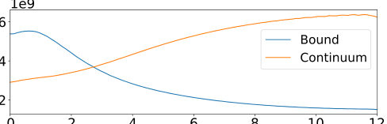

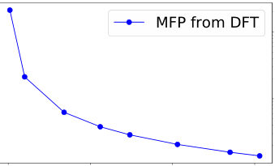
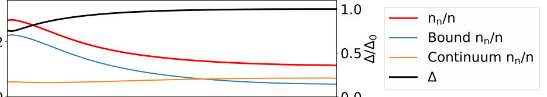
Summary. This paper addresses the unexplained 'anti-Q slope' in superconducting cavities by developing a novel three-fluid model. It separates normal fluid excitations into surface-bound and continuum states, calculating dissipation using Bogoliubov quasiparticle scattering rates. The model successfully demonstrates that the differential scattering rates between these two populations can generate the observed field-dependent quality factor anomaly.
Why it may be interesting. This work provides a detailed, microscopic mechanism for macroscopic superconducting performance anomalies, linking quantum quasiparticle dynamics (surface states) to measurable RF cavity parameters (Q-factor).
Main problem. The paper investigates the anomalous 'anti-Q slope' observed in superconducting radiofrequency (SRF) cavities, where the quality factor increases with the accelerating RF field amplitude.
Main result. The authors propose a three-fluid model that successfully explains the anti-Q slope by showing that the relative scattering rates between surface-localized and continuum quasiparticle states can induce this effect.
Method. The analysis involves solving the Bogoliubov-de Gennes equations numerically and employing a semi-classical theory of conductivity, modifying the standard two-fluid model.
Model / system. The system is superconducting niobium cavities operating under large RF fields. The model is a 'three-fluid' extension of the standard two-fluid model, separating the normal fluid into distinct continuum and surface quasiparticle components.
Key observables. Quality factor (Q) vs. accelerating field, local superconducting gap $\Delta(z)$, and the relative scattering rates ($ au_b/ au_c$) of bound vs. continuum quasiparticles.
Important parameters / regimes. Niobium parameters ($E_F = 5.32$ eV, $\Delta_0 = 1.5$ meV, $\lambda = 40$ nm), operating temperature ($T=2$ K), and RF frequency ($\omega = 1.3$ GHz).
Assumptions / limitations. The model assumes that bound states ($E_n < \Delta_0$) are governed by different scattering dynamics than continuum states ($E_n \ge \Delta_0$), necessitating the three-fluid approach.
Figures summary. Figures illustrate the partitioning of the normal fluid into bound and continuum components, the weakening of the superconducting gap at the surface, and the predicted Q vs. accelerating field curves based on different scattering rate assumptions.
Paper structure. The paper builds from identifying the experimental anomaly (anti-Q slope) to developing the theoretical framework (three-fluid model using BdG equations) to calculate dissipation via scattering rates, culminating in the prediction of the anti-Q slope mechanism.
Experiments on superconducting cavities have found that under large RF fields the quality factor can improve with increasing field amplitude, a so-called anti-Q slope.'' We numerically solve the Bogoliubov-de Gennes equations at a superconducting surface in a parallel magnetic field, finding at large fields there are surface quasiparticle states with energies below the bulk superconducting gap that emerge and disappear as the field cycles. Modifying the standard two-fluid model, we introduce athree''-fluid model where we partition the normal fluid to consider continuum and surface quasiparticle states separately. We compute dissipation in a semi-classical theory of conductivity, where we provide physical estimates of elastic scattering times of Bogoliubov quasiparticles with point-like impurities having potential strengths informed from complementary \textit{ab initio} calculations of impurities in bulk niobium. We show, in this simple yet effective framework, how the relative scattering rates of surface and continuum quasiparticle states can play a role in producing an anti-Q slope while demonstrating how this model naturally includes a mechanism for turning the anti-Q slope on and off.
Authors: Yichen Hu, Jacob Shapiro
Type: theory · Category: statistical mechanics · PDF: https://arxiv.org/pdf/2608.27554v1
Analysis basis: full PDF text, analyzed in chunks
Topic relevance: Keldysh / 2PI / non-Gaussian methods 1/5
Summary. This theoretical work establishes a rigorous connection between the large-time limit of a specific, regularized linear transport response and the Euler characteristic of the Fermi sea in 1D topological metals. By analyzing the continuum and lattice models, the authors provide a quantitative, observable quantity that measures a topological invariant, suggesting a new experimental pathway for topological characterization.
Why it may be interesting. The connection between a macroscopic, time-dependent transport measurement and a fundamental topological invariant like $\chi$ provides a novel, experimentally accessible diagnostic tool for characterizing topological phases in condensed matter systems.
Main problem. The paper aims to find a direct, observable transport quantity that yields the topological invariant, the Euler characteristic ($\chi$), for a Fermi sea in a metal, contrasting with standard measurements like the Chern number in gapped systems.
Main result. The large-time limit of the Abel-regularized transport response is rigorously proven to equal the Euler characteristic of the Fermi sea, $\chi(\Sigma_{EF})$.
Method. The analysis uses Kubo's formula applied to a regularized linear response function, analyzing the large-time limit of the commutator trace in momentum space.
Model / system. The system is a non-interacting electron in a continuous one-dimensional wire governed by a Hamiltonian $H = f(P)$ with a real-analytic dispersion relation. The Fermi sea $\Sigma_{EF}$ is defined by the momentum range where $f(p) \le E_F$.
Key observables. The Abel-regularized and Fermi-compressed linear response, $\Delta N_R(t)$, which is hypothesized to equal $\chi(\Sigma_{EF})$ in the large-time limit.
Important parameters / regimes. The large-time limit ($t o \infty$) is crucial, as the finite-time response is not topologically quantized. The analysis also compares continuum and lattice limits.
Assumptions / limitations. The dispersion $f(p)$ is assumed to be real analytic, and the Fermi sea $\Sigma_{EF}$ is compact. The derivation relies on specific regularization techniques to handle non-trace-class operators.
Figures summary. The notes describe figures illustrating the approach to the expected value (1) in the clean lattice limit, comparing periodic vs. open boundary conditions, and showing the behavior of disorder-averaged quantities in the Anderson model.
Paper structure. The argument progresses from defining the problem (finding $\chi$ via transport), establishing the continuum 1D result using regularization and large-time limits, and then extending the methodology to the lattice analog.
We give a rigorous one-dimensional formulation of Kane's transport proposal for probing the Euler characteristic of a Fermi sea. For a clean, translation-invariant continuum Hamiltonian with real-analytic dispersion, a Fermi sea confined to a finite momentum range, and nonzero Fermi velocity at every Fermi point, we analyze a particular Abel-regularized transport response (obtained by tracing over the Fermi sea) and prove that its large-time limit equals the Euler characteristic. We derive an explicit finite-time formula, show that quantization requires the large-time limit, and obtain a convergence rate under additional nonstationarity assumptions. We also prove the lattice analog, where the sharp commutator is trace-class and a completely filled band contributes zero. Finite-volume calculations illustrate the prescribed order of the thermodynamic and large-time limits.
Authors: Xue-Jin Zhang, Yue-Xin Huang, Wei Du, Xiaolong Feng, Shen Lai, Cong Xiao, Qian Niu, Shengyuan A. Yang
Type: theory · Category: other · PDF: https://arxiv.org/pdf/2608.28231v1
Analysis basis: full PDF text, analyzed in chunks
Topic relevance: Keldysh / 2PI / non-Gaussian methods 1/5
Summary. This work develops a rigorous quantum geometric theory for nonlinear current-induced orbital magnetization (CIOM). It shows that this effect arises from the interplay between anomalous orbital and Berry-connection polarizabilities. The theory predicts large, measurable nonlinear orbital magnetization in 2D materials like $ ext{MoS}_2$ and $ ext{MoTe}_2$, potentially surpassing the spin contribution even when SOC is weak.
Why it may be interesting. While focused on condensed matter magnetism, the rigorous derivation of a nonlinear response tensor based on geometric band structure properties (AOP/BCP) provides a powerful, generalizable theoretical tool for understanding non-equilibrium quantum responses in low-dimensional systems.
Main problem. The paper addresses the fundamental challenge of formulating the proper theory for nonlinear current-induced orbital magnetization (CIOM), particularly due to the nonlocal nature of the orbital magnetic dipole operator.
Main result. The nonlinear CIOM is shown to originate from the quantum geometric properties of the band structure: the anomalous orbital polarizability (AOP) and the Berry-connection polarizability (BCP). The theory predicts that this orbital magnetization can dominate over its spin counterpart in topological materials.
Method. The authors develop a microscopic theory by deriving the field-corrected orbital magnetic moment and applying it within a linear response framework to calculate the second-order response tensor $\beta_{abc}$.
Model / system. The theory is applied to nonmagnetic crystals, modeled using a 2D massive Dirac Hamiltonian, and validated using first-principles calculations on monolayer transition metal dichalcogenides ($ ext{MoS}_2$ and $ ext{MoTe}_2$).
Key observables. Nonlinear orbital magnetization ($\delta M$), characterized by the tensor $\beta_{abc}$, and the contributions from AOP and BCP.
Important parameters / regimes. The response is highly dependent on the chemical potential ($\mu$) and is predicted to be significant in materials with topological band features, irrespective of the spin-orbit coupling (SOC) strength.
Assumptions / limitations. The derivation relies on expanding the expectation value of the magnetic dipole operator in powers of the electric field ($E$) and assumes carrier relaxation processes leading to $\delta f \propto \tau E$.
Figures summary. Figures illustrate the schematic generation of out-of-plane magnetization from an in-plane E field, and show the calculated nonlinear CIOM response coefficient $\beta_z(xy)$ versus chemical potential for model systems and $ ext{MoX}_2$ materials, highlighting AOP and BCP contributions.
Paper structure. The paper establishes the theoretical framework by deriving the field-corrected orbital moment, derives the nonlinear response tensor $\beta_{abc}$ using AOP and BCP, and then applies this theory to calculate and predict measurable nonlinear CIOM in specific 2D materials.
Electric generation of magnetization is a focus of condensed matter research, and has recently been advanced into the nonlinear regime. However, due to the nonlocal nature of orbital magnetism, how to properly formulate nonlinear current-induced orbital magnetization remains a fundamental challenge. Here, we develop the proper theory for this effect. This is based on the microscopic derivation of field-corrected orbital magnetic moment of a Bloch electron, a critical missing piece in the present theory. We show that the quantum geometric origin of this phenomenon lies in both the anomalous orbital polarizability and the Berry-connection polarizability, which often provide competing contributions. Combining our theory with first-principles calculations, we predict significant, experimentally accessible nonlinear orbital magnetization generated in strained bilayer graphene, monolayer 1T' $\mathrm{MoS_2}$ and $\mathrm{MoTe_2}$. Remarkably, nonlinear orbital magnetization can dominate over its spin counterpart in materials with topological band features, irrespective of the spin-orbit coupling strength.
Authors: Yair Augusto Gutiérrez Fosado, Ayobami Daramola, Davide Marenduzzo, Ciprian G. Pruteanu
Type: theory · Category: disordered systems and neural networks · PDF: https://arxiv.org/pdf/2608.28365v1
Analysis basis: full PDF text, analyzed in chunks
Topic relevance: analog quantum simulation 1/5
Summary. This work develops a topological framework using the 'linking valence' to characterize network-forming materials like silica. By analyzing the linking between structural loops, the authors successfully distinguish between amorphous and crystalline phases, correlating topological constraints with mechanical hardness. This establishes linking as a powerful new tool for connecting structure and physical properties in disordered solids.
Why it may be interesting. While focused on condensed matter structure, the use of graph theory, spectral analysis (Laplacian), and localization measures (IPR) to characterize structural order shares methodological overlap with analyzing complex quantum many-body systems or disordered quantum states.
Main problem. The study aims to move beyond conventional geometric descriptors to understand how the topology of network-forming materials dictates their physical properties, particularly mechanical hardness.
Main result. The introduction of the linking valence successfully separates silica phases into distinct topological classes, correlating high linking values with mechanically harder crystalline phases like quartz.
Method. The authors characterize the network by constructing a graph from atomic bonds and analyzing the topology using the Gauss linking number to define a 'linking valence' descriptor.
Model / system. The research focuses on network-forming materials, specifically amorphous silica and its crystalline polymorphs (quartz, cristobalite), and amorphous ice, modeled using atomistic simulations constrained by neutron-scattering data.
Key observables. Linking valence (Z), Gauss linking number, graph Laplacian spectrum, and Inverse Participation Ratio (IPR).
Important parameters / regimes. The linking valence $Z$ is the key descriptor, which varies significantly based on the charge assignment used in the atomistic model.
Assumptions / limitations. The topological picture is highly sensitive to the underlying atomistic model (e.g., charge assignment) used to define the network structure.
Figures summary. Figures illustrate the AIASSE workflow, show the separation of silica phases based on linking valence vs. loop size, and present spectral analysis (Laplacian spectra and IPR) comparing different amorphous and crystalline states.
Paper structure. The paper progresses from establishing the inadequacy of geometric descriptors to introducing the linking valence, demonstrating its ability to distinguish phases, and finally complementing this with spectral analysis (Laplacian/IPR) to provide a comprehensive topological fingerprint.
Understanding how the topology of network forming materials influences their physical properties remains a longstanding challenge. Here, we investigate the topology of experimentally compatible atomistic models of amorphous silica together with the crystalline polymorphs cristobalite and quartz. By comparing multiple atomistic models of amorphous silica that equally reproduce neutron-scattering data, we show that different microscopic descriptions can imply different topological interpretations of glass stability. To characterize the network beyond conventional geometric descriptors, we introduce the linking valence, which quantifies the average number of topological links per network loop. This topological descriptor separates silica into two distinct classes: the mechanically harder quartz exhibit values more than an order of magnitude larger than those of amorphous silica and cristobalite, despite their common tetrahedral building blocks. Spectral analysis of the loop-linking networks provides a complementary distinction, separating amorphous from crystalline phases and revealing differences in the long-range organization of topological constraints. These results establish topological linking as a new framework for connecting the structure and physical properties of network-forming materials.